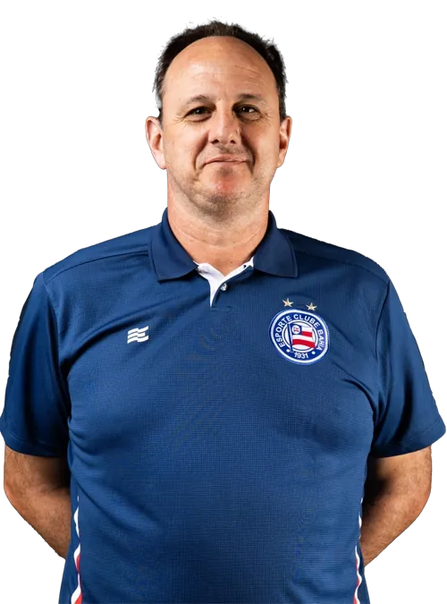
QUEM É ROGÉRIO CENI? 🧤
Ídolo, goleiro e artilheiro
Rogério Ceni é um dos maiores ídolos da história do futebol brasileiro. Ex-goleiro do São Paulo Futebol Clube,
atuou por mais de 20
anos no clube, onde se consagrou como o goleiro que mais marcou gols na história do futebol mundial, com 131
gols. Nascido em 1973,
no Paraná, Ceni começou sua carreira no Sinop (MT), mas foi no São Paulo onde se eternizou, conquistando títulos
como a Libertadores,
o Mundial de Clubes, Campeonatos Brasileiros, Paulistas, entre outros. Além da habilidade debaixo das traves,
ficou famoso por sua
precisão em cobranças de faltas e pênaltis. Após se aposentar em 2015, iniciou carreira como treinador, passando
por clubes como
Fortaleza, Flamengo e atualmente comanda o Bahia. Rogério Ceni representa dedicação, lealdade e inovação no
futebol.
INÍCIO DA CARREIRA 👶
Rogério Ceni iniciou sua trajetória no futebol profissional atuando pelo Sinop Futebol Clube, do estado do Mato
Grosso.No Sinop, ele começou a desenvolver as bases que o levariam a se destacar pelo seu jeito único de jogar,
demonstrando reflexos e técnicas que, posteriormente, fariam dele um dos maiores goleiros da história do
futebol. De forma curiosa, até começou a experimentar chutar a bola, característica que mais tarde se tornaria
sua marca registrada.
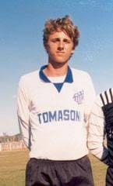
CHEGADA AO SÃO PAULO 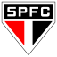

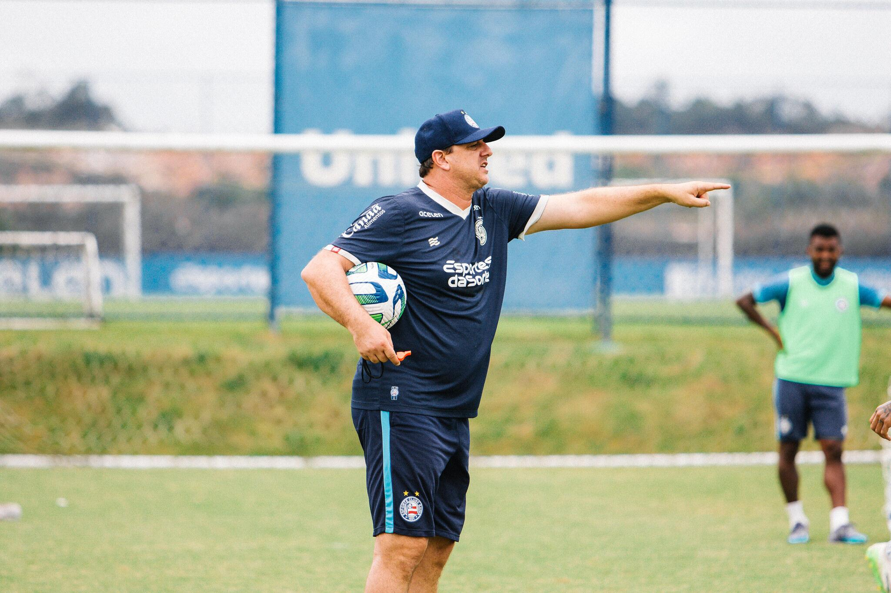
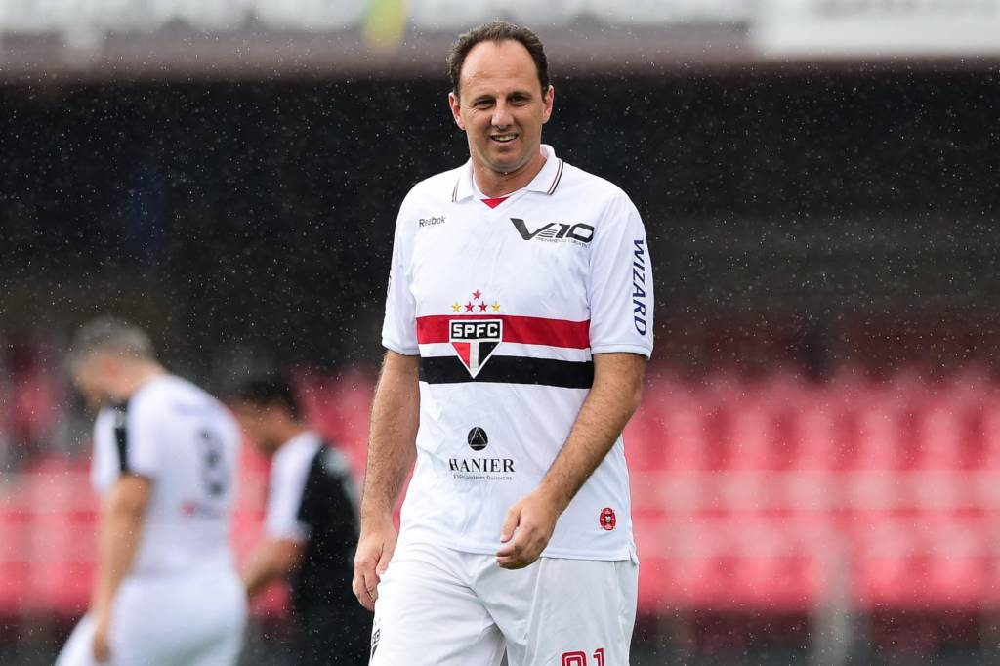
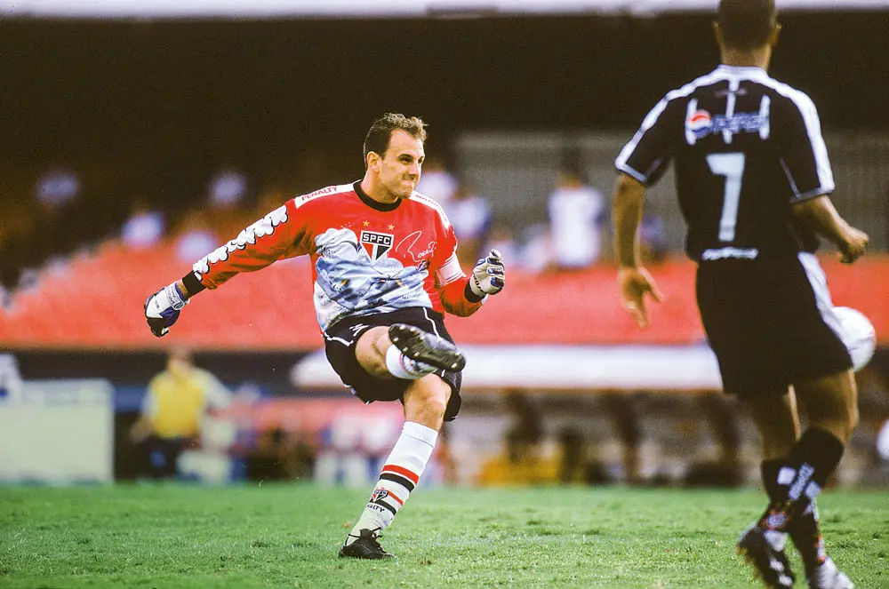
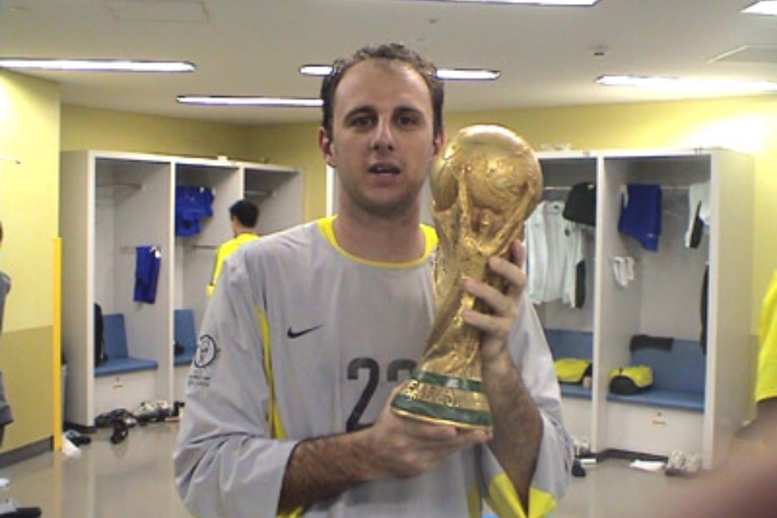
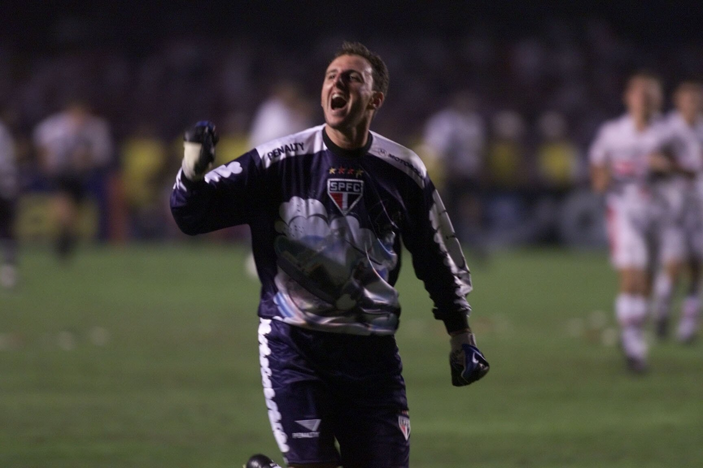
Rogério Ceni chegou ao São Paulo em 1990, com apenas 17 anos. Começou na base e, em 1993, já fazia parte do
elenco profissional, embora como reserva do lendário goleiro Zetti. Sua estreia como titular aconteceu em 1997, e
daí pra frente, ele nunca mais saiu da posição.
Ao longo de 25 anos no clube, Ceni se tornou 👑 O maior ídolo da história do São Paulo.
Legado
Ceni era mais que um goleiro — era capitão, líder e símbolo de profissionalismo. Ficou conhecido por seu
perfeccionismo, treinos intensos e habilidade com os pés, o que o diferenciava de outros goleiros da época. Ele se
aposentou em 2015, após uma
carreira inteira dedicada a um único clube — uma raridade no futebol moderno.
JORNADA COMO TREINADOR 🧠
Após se aposentar como goleiro em 2015, Rogério Ceni
rapidamente deu início à sua nova jornada como treinador.
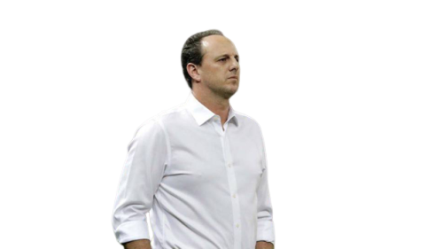
Histórico como Técnico 📋
São Paulo FC (2017)
Primeira experiência como técnico, logo após se aposentar como jogador.
Apesar da grande expectativa da torcida, os resultados foram abaixo do esperado
e ele foi demitido ainda no mesmo ano.

Fortaleza (2018–2019, 2020–2021)
Onde Ceni se destacou como treinador. Conquistou a Série B de 2018, o Campeonato
Cearense e a Copa do Nordeste. Ficou marcado pelo estilo ofensivo e inovador. Foi no
Fortaleza que ganhou reconhecimento nacional como técnico promissor.
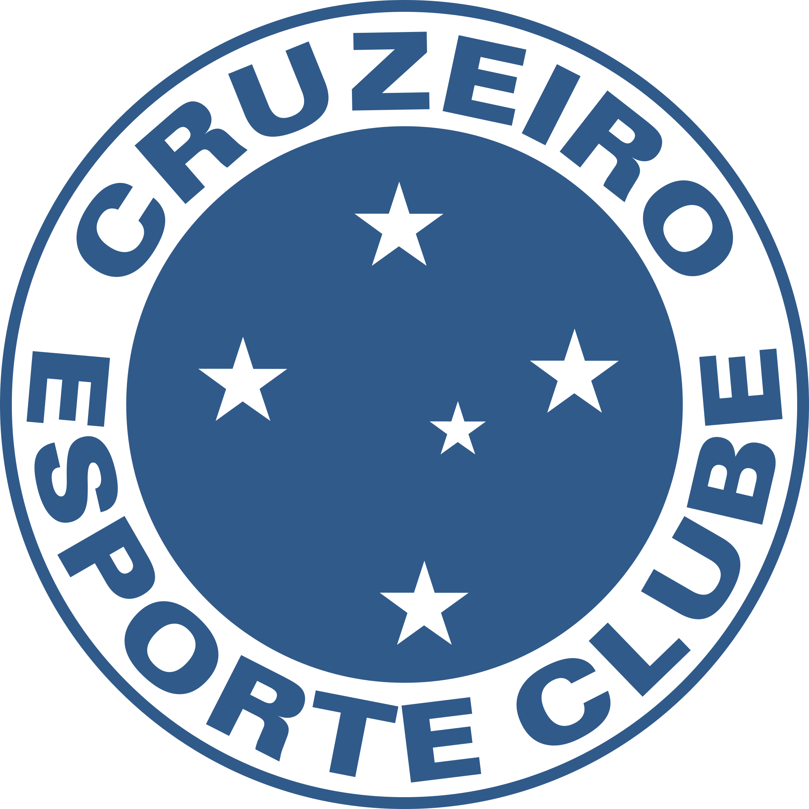
Cruzeiro (2019)
Passagem curta e turbulenta. Teve desentendimentos com jogadores mais experientes e
deixou o clube após menos de dois meses.

Flamengo (2020–2021)
Assumiu o Flamengo e conquistou três títulos: o Campeonato Brasileiro de 2020, a
Supercopa do Brasil e o Campeonato Carioca. Apesar das conquistas, enfrentou
críticas e acabou saindo em 2021.
São
Paulo FC (2021–2022)
Retornou ao São Paulo como técnico. Levou o time à final da Copa Sul-Americana em 2022,
mas não conseguiu títulos. Teve uma relação de altos e baixos com a torcida.
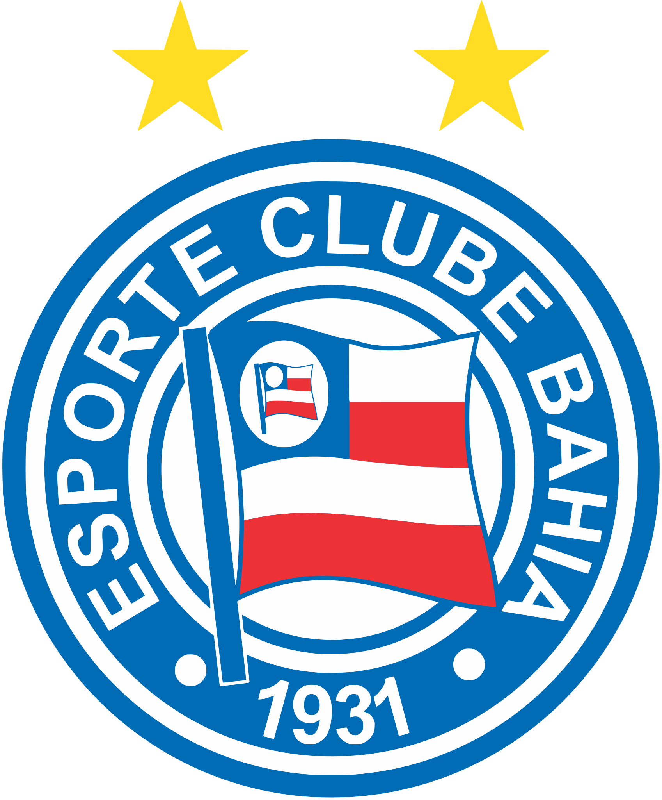
Bahia (2023–atualmente)
Atualmente comanda o Bahia, parte do Grupo City. O trabalho segue
em andamento, com foco em reconstrução e desenvolvimento de um elenco competitivo.
Após 2 anos de projeto, Ceni começa a colher frutos, alcançou o campeonato estadual e a volta
do Bahia à Libertadores, clube no qual estava sem muitas expectativas quando o assumiu.